PLAY 1
Главный проект · 2023 — …
PLAY
PLAY — проект художницы Ольги Симоновой (sim.play.art), который она развивает с 2023 года. Это серия керамических «пирамид» — открытая визуальная система: каждый объект собирается из элементов на магнитах, которые можно соединять, вращать и менять местами. Зритель может стать соавтором и пересобрать работу. Объекты PLAY 1, PLAY 10 и PLAY 12 представлены в галерее SAMPLE.
| Годы | 2023 — по настоящее время |
|---|---|
| Материалы | глина, глазурь, магниты; в PLAY 10 и PLAY 12 — стекло |
| Техники | ручная лепка, литьё в гипсовые формы, авторские глазури, роспись самовязаными кистями |
| Размер | до 50 см в высоту |
| Объекты | PLAY 0,1–0,4 · PLAY 1 · PLAY 6 · PLAY 10 · PLAY 11 · PLAY 12 |
| Где купить | галерея SAMPLE, напрямую через Telegram |
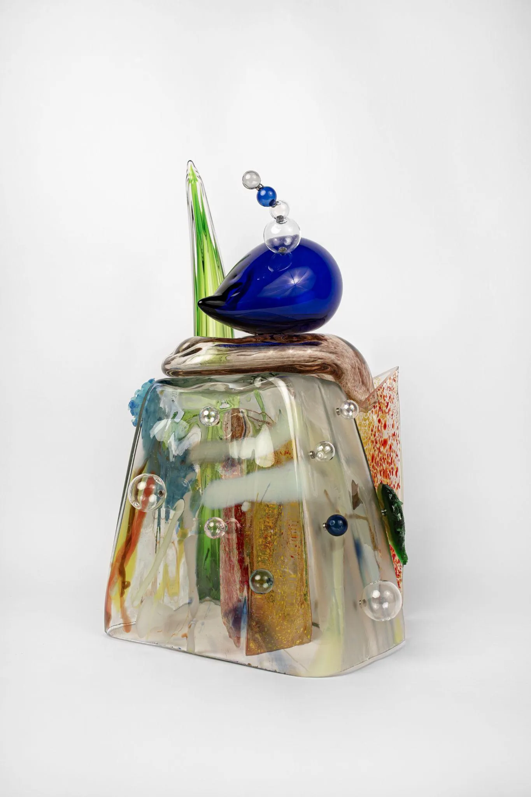
Идея
PLAY — это визуальная открытая система. Каждый объект — керамическая пирамида, в которой Ольга использует метод игры. Игра здесь не про детство, а про возможность пересмотреть рутину и наделить привычное новым смыслом.
Пирамиды PLAY не зафиксированы: это гибкие и открытые к изменениям конструкции. Они собираются с помощью магнитов и состоят из элементов, которые можно соединять, вращать и менять местами. PLAY — форма диалога, в котором встречаются материал, художница и зритель.
Процесс
Работа начинается с эскиза на бумаге и в объёме, затем — материал. Детали отливаются в гипсовых формах или лепятся вручную. Для особенных частей Ольга сама готовит глазури, некоторые элементы расписывает самовязаными кистями. Цель — упорядочить хаос и с уважением подойти к каждой детали.
Видео из мастерской
Собери · Разбери
Пирамиды PLAY ничем не склеены: элементы держатся на магнитах. Ольга собирает и разбирает четыре объекта. На каждой карточке можно переключить режим.
PLAY 10
PLAY 12
PLAY 6
PLAY 6, 2025
глина, глазурь, магниты · 50 × 24 см
Что происходит в видео (текстовое описание)
PLAY 1. Ольга по одному снимает элементы пирамиды PLAY 1 — голубую «волну» в крапинку, белый конус, облако, синюю лестницу, жёлтую грушу и розовый фактурный цилиндр, — а затем собирает объект обратно на сиреневом основании.
PLAY 10. PLAY 10 разбирается на розовое клетчатое основание, белый перфорированный купол с синими «червячками» на магнитах, красные цветы-звёзды, розовую стеклянную «волну», белое облако и грушу на вершине — и собирается снова.
PLAY 12. Пирамида PLAY 12 складывается из белого основания с воланом, салатового кольца с бусинами, голубого цилиндра, зубчатых «воротников», облака, зелёного шара и огрызка яблока на вершине.
PLAY 6. PLAY 6 собирается из прозрачной трапеции с цветными включениями, синего шара с бусинами на магнитах, розовой «подушки» и зелёного листа-лезвия.
Работы
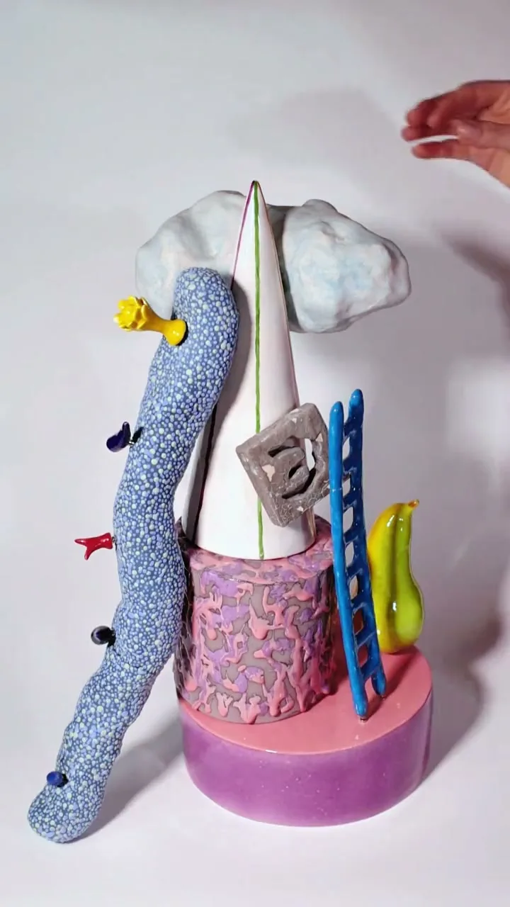
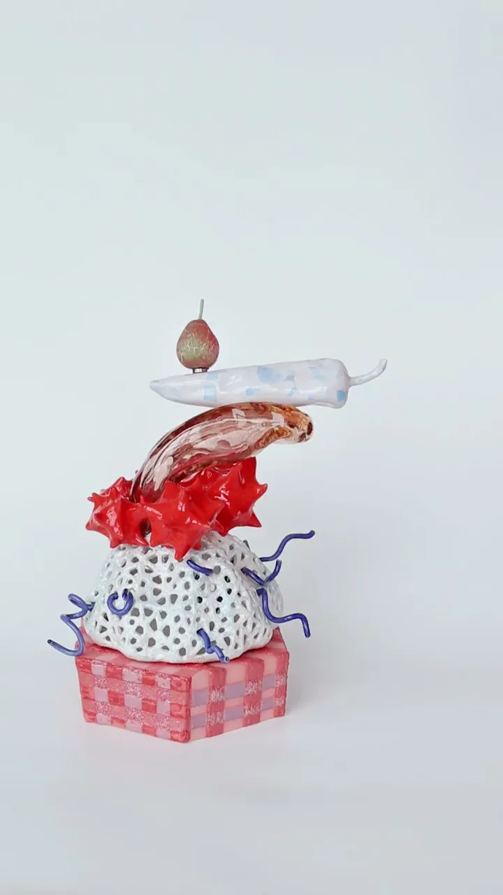
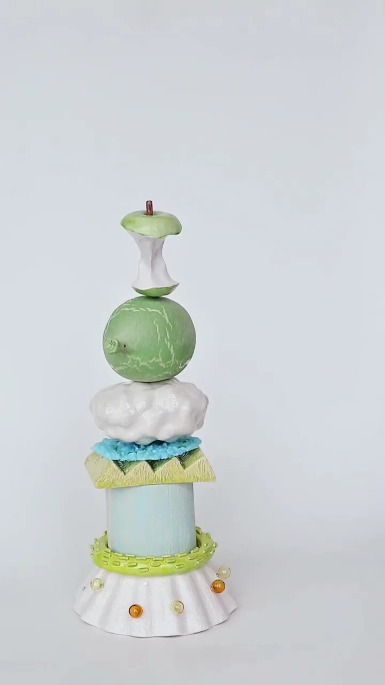

PLAY 11
2026 · глина, глазурь, магниты · ~40 × 28 см
PLAY 6
2025 · глина, глазурь, магниты · 50 × 24 см
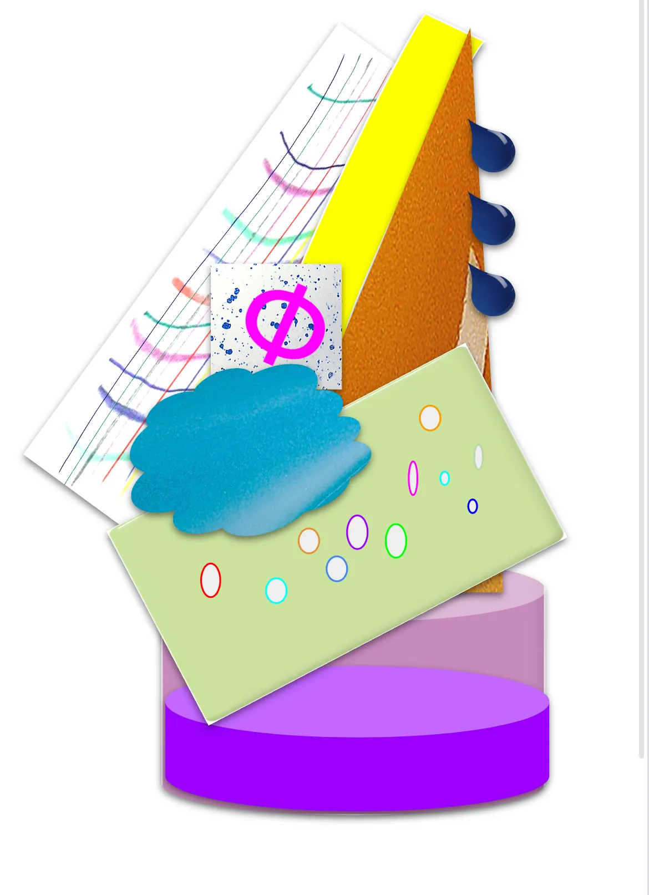
PLAY 0,1 / 0,2 / 0,3 / 0,4
2026 · глина, глазурь, магниты · до 30 см
в работеГалерея

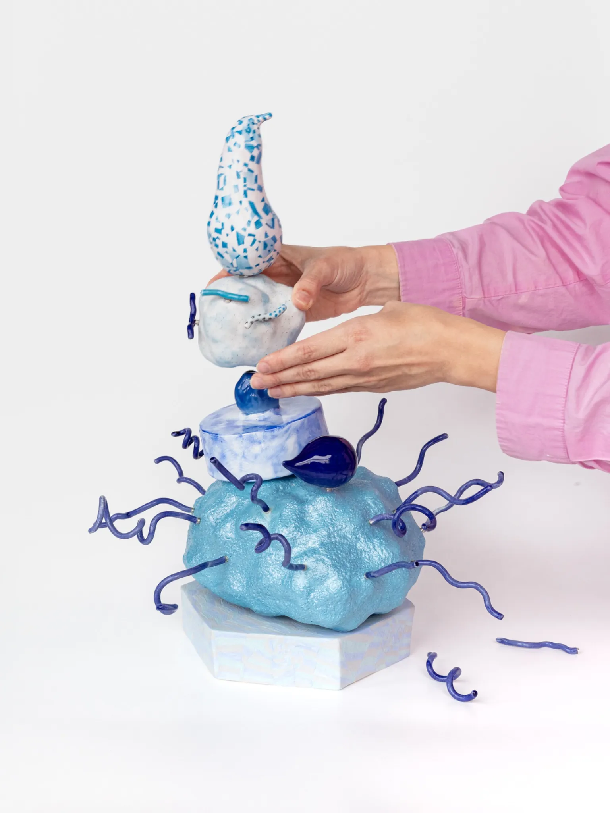
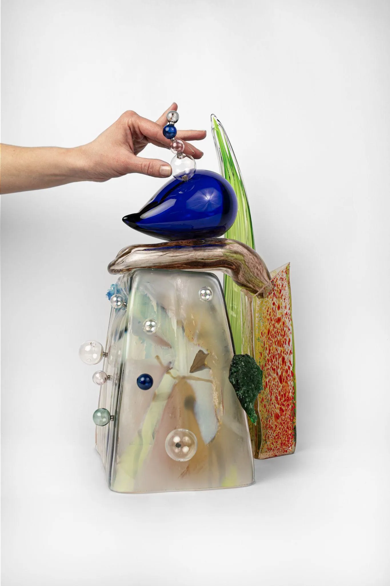
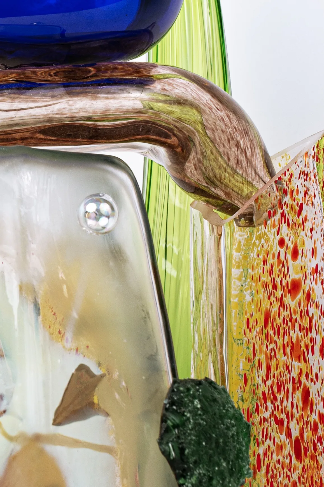
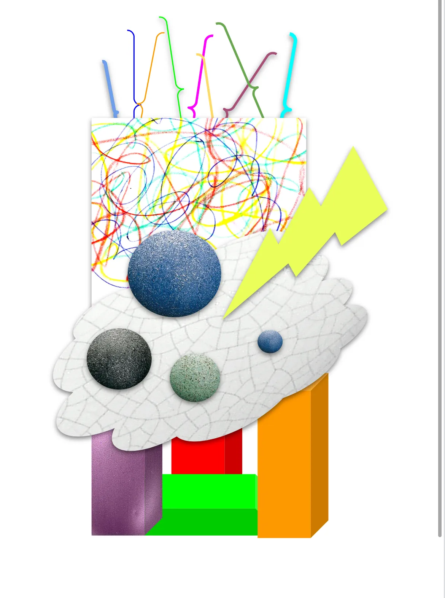
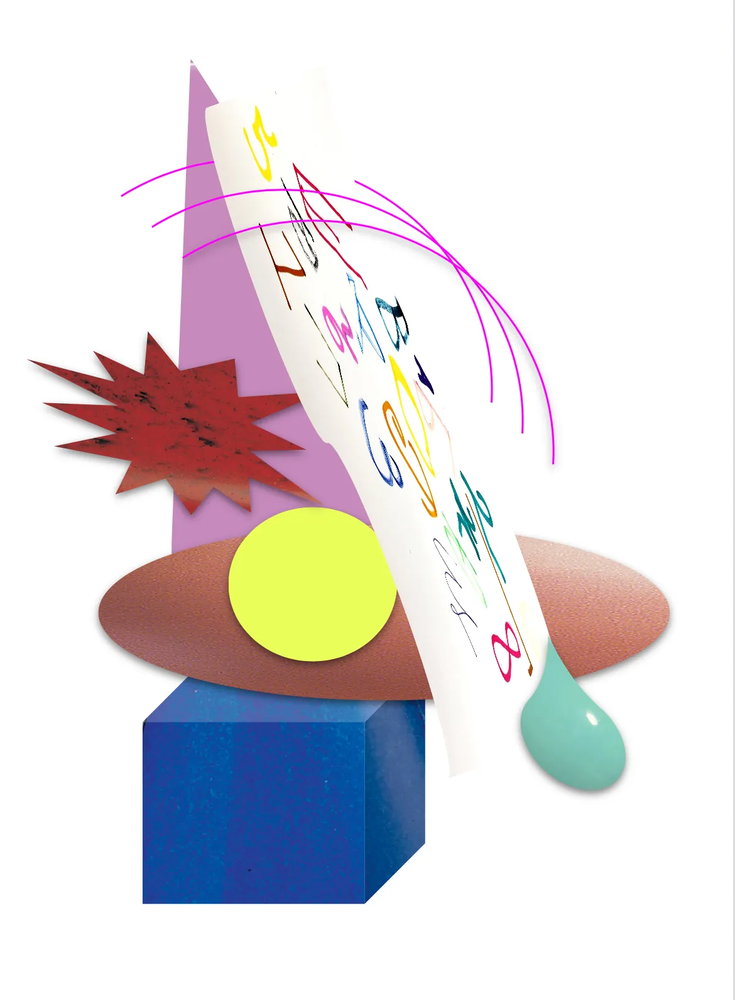
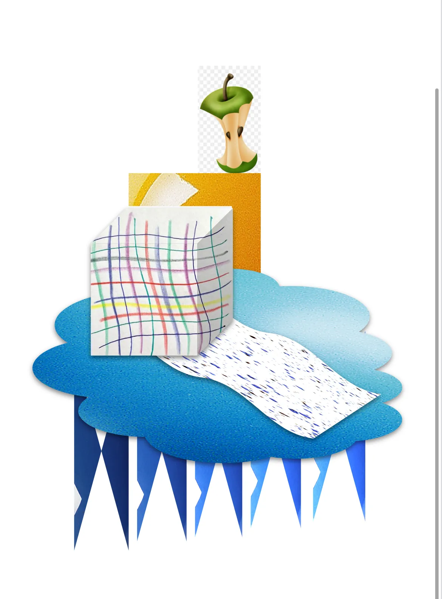
Обновлено: 2026-11-06. Вопросы о покупке — Telegram @simplayart, Instagram @sim.play.art.